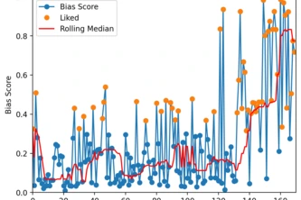
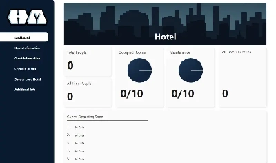
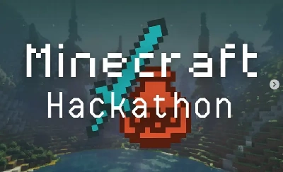

Impartial Prejudice
TikTok algorithm currator, 2nd place at Hack The Bias '26.

Spirits of Steel: A New Dawn
Grand strategy game / alt history simulator.

Watershed Visualizer
Interactive South Saskatchewan River Basin visualization.

Fightbuild
Survival game with zombie rabbits.

Hotel Manager
Hotel management software, term project for CPSC 233.


Block Pusher
A minecraft mod, 1st place at DESS '24.

Robot Training Protocol
Unnecessarily difficult puzzle-platformer.